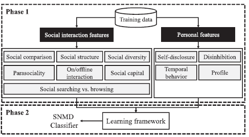

Tensor factorization acceleration, online social network, mental disorder detection, feature extraction
A Comprehensive Study on Social Network
Mental Disorders Detection
Tensor factorization acceleration, online social network, mental disorder detection, feature extraction

The explosive growth in popularity of social networking leads to the problematic usage. An increasing number of social network mental disorders (SNMDs), such as Cyber-Relationship Addiction, Information Overload, and Net Compulsion, have been recently noted. Symptoms of these mental disorders are usually observed passively today, resulting in delayed clinical intervention. In this paper, we argue that mining online social behavior provides an opportunity to actively identify SNMDs at an early stage. It is challenging to detect SNMDs because the mental status cannot be directly observed from online social activity logs. Our approach, new and innovative to the practice of SNMD detection, does not rely on self-revealing of those mental factors via questionnaires in Psychology. Instead, we propose a machine learning framework, namely, Social Network Mental Disorder Detection (SNMDD), that exploits features extracted from social network data to accurately identify potential cases of SNMDs. We also exploit multi-source learning in SNMDD and propose a new SNMD-based Tensor Model (STM) to improve the accuracy. To increase the scalability of STM, we further improve the efficiency with performance guarantee. Our framework is evaluated via a user study with 3126 online social network users. We conduct a feature analysis, and also apply SNMDD on large-scale datasets and analyze the characteristics of the three SNMD types. The results manifest that SNMDD is promising for identifying online social network users with potential SNMDs.